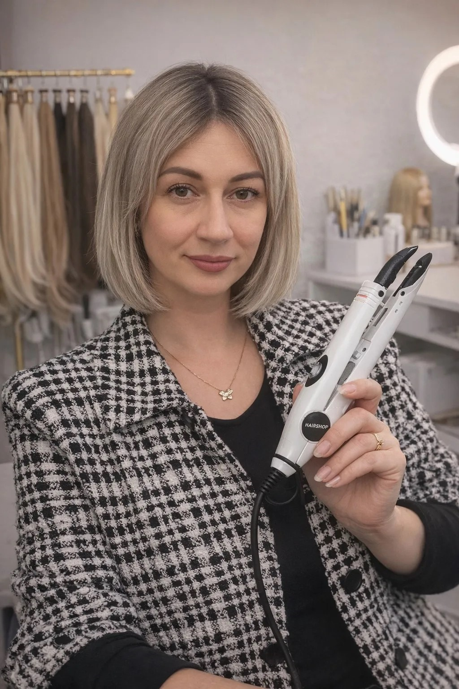

Натуральный объём, безопасно для своих волос, эффект до 6 месяцев.

Три главных преимущества перед классическим наращиванием
Биопротеиновые пряди имитируют структуру настоящего волоса — никто не отличит от ваших.
Кератиновые капсулы не травмируют родные волосы. Подходит даже для тонких и ослабленных.
Эффект сохраняется до 6 месяцев при правильном уходе. Коррекция — раз в 2–3 месяца.
Подбираем цвет, длину и объём под ваш образ.
Моем голову, подготавливаем пряди и капсулы.
Закрепляем пряди. Процедура занимает 2–4 часа.
Финальная стрижка и укладка. Вы сразу видите результат.
Запишитесь на бесплатную консультацию — подберём пряди под ваш образ.
Записаться